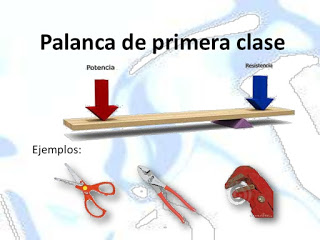

| COMPONENTE |
DESEMPEÑO |
| Naturaleza y evolución de la tecnología: | Identifico principios científicos aplicados al funcionamiento de algunos artefactos, productos, servicios, procesos y sistemas tecnológicos. |
| COMPONENTE |
DESEMPEÑO |
| Naturaleza y evolución de la tecnología: | Identifico principios científicos aplicados al funcionamiento de algunos artefactos, productos, servicios, procesos y sistemas tecnológicos. |
PRINCIPIOS CIENTÍFICOS APLICADOS AL FUNCIONAMIENTO DE ARTEFACTOS, SERVICIOS Y PROCESOS TECNOLÓGICOS
Todas las máquinas, instrumentos y equipos electrónicos que se han inventado o innovado se basan en principios científicos. Estudiando algunos principios básicos se entiende mejor cómo se construyen las máquinas, su forma y funcionamiento.
1. AERODINÁMICA: es el estudio de la manera en que el aire fluye alrededor de los objetos. Cada objeto tiene una forma y ésta afecta la manera como el aire se desplaza a su alrededor. Si la forma es ancha, angulosa y grande, como un camión, el aire no fluye con facilidad. Pero se desplaza fácilmente alrededor de una forma delgada y curvada, como la de un carro.
El estudio de la aerodinámica es, justamente, el estudio de la interacción entre un objeto que se mueve y el medio por el cual lo hace. Las características físicas del objeto, junto con las características físicas del medio, dan como resultado una dinámica específica de movimiento.
Cuanto más rápido es el movimiento, más notable es la interacción. Por ejemplo, cuando caminamos no notamos cómo el aire a nuestro alrededor interactúa con nosotros; sin embargo, cuando corremos podemos notar cómo nos afecta la intensidad y la dirección de la corriente de aire. A grandes velocidades, el aire nos genera fricción, intenta frenarnos. Para reducir la fricción cuando conducimos una moto, por ejemplo, nos recomiendan inclinarnos hacia adelante. Al agacharnos, el objeto —que en este caso es la moto junto con nuestro cuerpo— se vuelve más compacto y el aire encuentra menos superficie sobre la cual generar la fricción.
2. COMBUSTIÓN: Esta palabra significa quemar, consumir en llamas. La Combustión es un proceso químico de oxidación rápida que va acompañado de desprendimiento de energía en forma de calor y luz.
Para que éste proceso se dé, es necesario la presencia de los siguientes elementos:
A. Combustible: es el material capaz de arder y que se combina con el oxígeno. En las combustiones ordinarias el combustible es una sustancia compuesta, como hidrocarburos (gas de petróleo, gasolina, kerosene (petróleo), parafina), papel y la madera.
B. Comburente: es una sustancia que genera el desarrollo de la combustión. El oxígeno es el elemento esencial para que se produzca y continúe el proceso de oxidación.
C. Calor: el combustible debe alcanzar un grado de calor mínimo para que pueda arder, dicho grado de calor es lo que se conoce como temperatura de inflamación. Los materiales combustibles tienen una temperatura de inflamación baja y entran con facilidad en combustión. Los combustibles, al quemarse, no desprenden iguales cantidades de calor.
3. LA GRAVEDAD: es la fuerza que empuja todo hacia el suelo. En realidad no se sabe ni que es ni cómo está compuesta realmente, sólo se sabe cómo se comporta.
La fuerza de la gravedad que se ejerce sobre un objeto depende de la cantidad de materia que lo compone. Entre más grande, más atracción.
4. LA PALANCA: Es una máquina simple cuya función es transmitir fuerza y desplazamiento. Está compuesta por una barra rígida que puede girar libremente alrededor de un punto de apoyo. Puede utilizarse para incrementar la velocidad o distancia recorrida, en respuesta a la aplicación de una fuerza.
Sobre la barra rígida que forma una palanca actúan tres fuerzas:
A· La potencia: es la fuerza que aplicamos voluntariamente con el fin de obtener un resultado.
B· La resistencia: es la fuerza que vencemos, ejercida sobre la palanca por el cuerpo a mover.
C· La fuerza de apoyo: es la ejercida por el fulcro (punto de apoyo de la barra) sobre la palanca.
CLASES DE PALANCAS: Las palancas se dividen en tres géneros, es decir, existen tres maneras de repartir la potencia, la resistencia y la fuerza de apoyo.
A. PALANCA DE PRIMERA CLASE:En la palanca de primera clase, el fulcro se encuentra situado entre la potencia y la resistencia. Disminuye la velocidad transmitida y la distancia recorrida por la resistencia. Ejemplos de este tipo de palanca son el balancín, las tijeras, las tenazas, los alicates o la catapulta.

B. PALANCA DE SEGUNDA CLASE:La resistencia se encuentra entre la potencia y el fulcro. Se caracteriza en que la potencia es siempre menor que la resistencia. Ejemplos de este tipo de palanca son la carretilla, los remos y el cascanueces (utensilio que fue inventado y diseñado para poder partir nueces).
C. PALANCA DE TERCERA CLASE:La potencia se encuentra entre la resistencia y el fulcro. Se caracteriza en que la fuerza aplicada es mayor que la resultante; y se utiliza cuando lo que se requiere es ampliar la velocidad transmitida a un objeto o la distancia recorrida por él. Ejemplos de este tipo de palanca son el quitagrapas, la caña de pescar y la pinza de cejas.
5. LA REFLEXIÓN: La reflexión es el cambio de dirección de una onda, que al entrar en contacto con la superficie de separación entre dos medios cambiantes, regresa al punto donde se originó. Ejemplos reflexión de la luz, el sonido y las ondas en el agua.
A. REFLEXIÓN DE LA LUZ: la luz se refleja cuando incide sobre un medio material. Se distingue dos tipos de reflexión:
Reflexión especular: es aquella que se produce como en un espejo; cuando la superficie reflejante es lisa, se muestra la misma imagen, sin modificación.
Reflexión difusa: ocurre si la superficie reflejante es áspera no se conserva la imagen y solo se ve iluminada la superficie.
B. REFLEXIÓN SONORA: Una onda se refleja (rebota al medio del cual proviene) cuando se encuentra con un obstáculo que no puede traspasar ni rodear. (eco)
C. REFLEXIÓN Y LAS ONDAS EN EL AGUA: Puede producir dos tipos de ondas en el agua, circulares y lineales.
6. LA REFRACCIÓN: fenómeno que se produce cuando un rayo de luz sufre un quebrantamiento o desvío, cambiando su dirección, al atravesar en forma oblicua dos medios distintos, de diferente densidad, y transparentes.
Fuente:
http://carsbrid.blogspot.com/p/principios-cient.html
Obra publicada con Licencia Creative Commons Reconocimiento Compartir igual 4.0